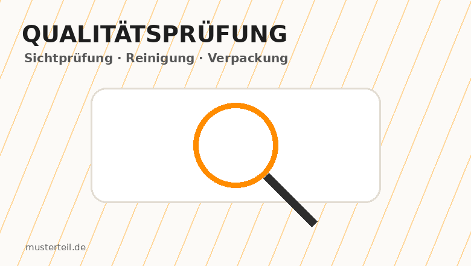

Upload‑ähnlicher Einstieg
Der Kunde wählt lokal eine Datei aus. Die Website liest Name und Größe und erstellt daraus eine Anfragegrundlage.
Musterteil überträgt die klare Struktur moderner Fertigungsplattformen auf ein bewusst kleines und realistisches Geschäftsmodell: PLA‑3D‑Druck für Einzelstücke, Prototypen und Kleinserien.

Große Anbieter kombinieren Datei‑Upload, Materialauswahl, Quote‑Prozess und klare Servicebereiche. Musterteil nutzt diese Logik, bleibt aber bewusst auf PLA‑Druck, kleine Aufträge und persönliche Kommunikation fokussiert.
Der Kunde wählt lokal eine Datei aus. Die Website liest Name und Größe und erstellt daraus eine Anfragegrundlage.

Projektart, Menge, Komplexität, Nachbearbeitung und Versand werden zu einer Preisindikation kombiniert.

Qualitätskontrolle, Reinigung, Verpackung und realistische Grenzen werden sichtbar kommuniziert.
Viele industrielle Plattformen sind stark, aber für Studierende, Schüler oder kleine Einzelprojekte oft zu groß gedacht. Musterteil positioniert sich bewusst persönlicher und leichter zugänglich.
Modelle, Projektarbeiten, Wettbewerbe und Prototypen.
Ersatzteile, Einzelstücke und individuelle Projekte.
Erste Produktmuster und Präsentationsobjekte.
Kleinserien, Anschauungsmodelle und Musterteile.

Visual für PLA‑Modell, Prototyp, Ersatzteil oder Präsentationsobjekt.

Visual für PLA‑Modell, Prototyp, Ersatzteil oder Präsentationsobjekt.

Visual für PLA‑Modell, Prototyp, Ersatzteil oder Präsentationsobjekt.

Visual für PLA‑Modell, Prototyp, Ersatzteil oder Präsentationsobjekt.

Visual für PLA‑Modell, Prototyp, Ersatzteil oder Präsentationsobjekt.

Visual für PLA‑Modell, Prototyp, Ersatzteil oder Präsentationsobjekt.